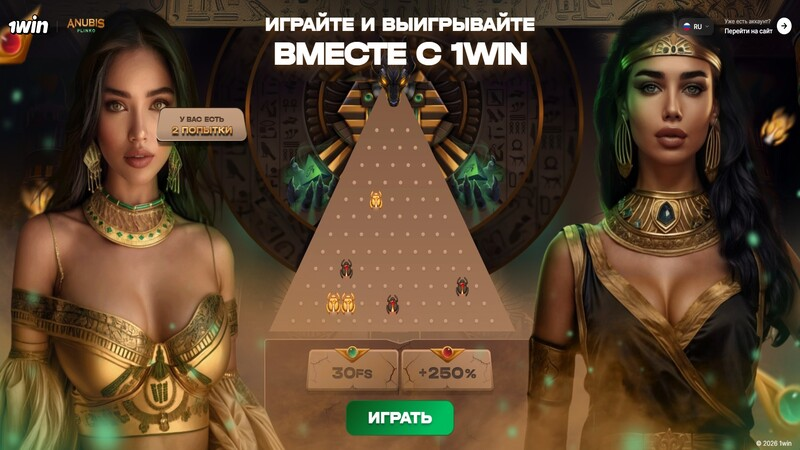
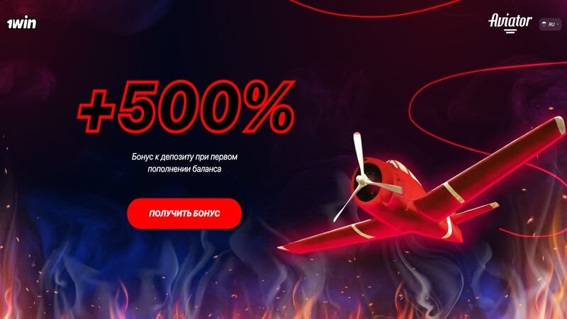
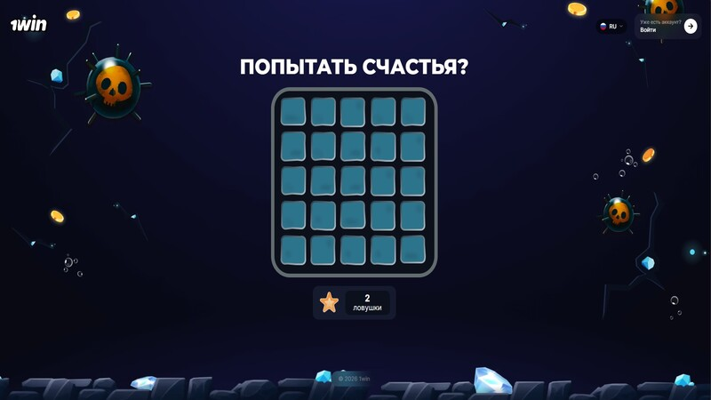
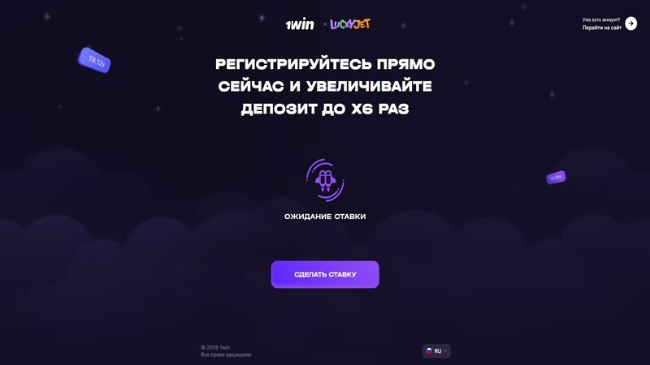

1win'de Anubis Plinko Nasıl Yenilir: Çalışan Stratejiler ve Gizli Algoritmalar

Online casinolarda crash oyunlarının popülaritesi hızla artıyor ve şu anda en büyük trend 1win platformundaki Anubis Plinko oyunu oldu. Birçok oyuncu bu oyunun mantığını Aviator stratejileriyle karşılaştırıyor, peki sürekli büyük kazançlar elde etmeyi sağlayan gerçek bir şema var mı?
Anubis Plinko Algoritması Nasıl Çalışır?
Oyunun temelinde tamamen şeffaf olan Provably Fair sistemi yatmaktadır. Top yukarıdan aşağıya doğru düşer ve pürüzlere çarparak alt kısmdaki hücrelere ulaşır. Merkezdeki hücreler en düşük çarpanları (x1'den az) verirken, kenardaki hücreler inanılmaz kazançlar (x1000'e kadar) getirir. Algoritma belirli döngülerle çalışır. Eğer oyun uzun süre merkeze hit verdiyse, yakında kenarlara doğru bir dağılım başlayacaktır.
«Anubis Çift Yükseltme» Şeması
- Maksimum sıra sayısını seçin (16 satır).
- Yemleme aşaması: Risk seviyesini Düşük (Low) olarak ayarlayın ve merkeze 7-8 top düşürün.
- Değişim: Risk seviyesini aniden Yüksek (High) olarak değiştirin ve bahis miktarını 3-5 kat artırın.
- Arka arkaya 5-7 top bırakın. Algoritma, önceki döngünün telafisi olarak topu kenarlardaki yüksek çarpanlara gönderecektir.
1win'de Aviator Nasıl Yenilir: Düşük Çarpan Taktikleri

Aviator oyunu casinolarda mutlak bir hit olmaya devam ediyor. Ana amaç, uçak uçup gitmeden önce bahsi bozdurmaktır. Profesyonel oyuncular, düşük riskli matematiksel stratejileri tercih ediyorlar.
Özü: «Güvenli Kalkış» Stratejisi (x1.15)
İstatistiklere göre, uçak turların %90'ında x1.15 işaretini geçmektedir. Otomatik Nakit Çekim (Auto-Cashout) özelliğini x1.15 olarak ayarlayın ve bakiyenizin %5'i kadar bahis yapın. Arka arkaya 5 uçuşluk seriler halinde oynayın.
Önemli Uyarı: Her 10-15 turda bir anlık crash (x1.00) gerçekleşir. Serinize başlamadan önce mutlaka oyun geçmişini kontrol edin.
1win'de Mines Sırları: Adım Adım 3 Mayın Şeması

1win'deki Mines (Mayınlar) oyunu, oyuncuların kendi risk seviyelerini tamamen kontrol etmelerini sağlar. Oyun alanı, arkasında kristaller veya mayınlar saklayan 25 hücreden oluşur.
«Akıllı Mayın Tarama Gemisi» Algoritması
Mayın sayısını 3 olarak ayarlayın. Alanın köşelerindeki tam 4 hücreyi açın. Bu durumda çarpan oranınız x1.45'e ulaşacaktır. Kazancınızı hemen nakde çevirin ve merkeze dokunmayın.
Lucky Jet'te Bakiye Yükseltme: x100 Çarpanlarını Yakalamak

Lucky Jet oyunu 1win platformuna özel bir seçenektir. Matematiksel algoritması, ultra yüksek çarpanların (x100+) görünümü için net bir döngüsel düzene sahiptir.
Taktik: «Altın X Avı»
Algoritma yaklaşık olarak her 60-90 dakikada bir x100 çarpanı düşürür. Oyun geçmişindeki son x100 kazancını bulun, üzerine 60 dakika sayın ve yüksek çarpanı yakalamak için bahis yapmaya başlayın.